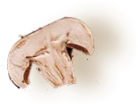
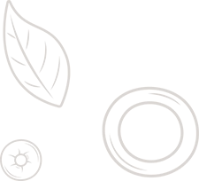
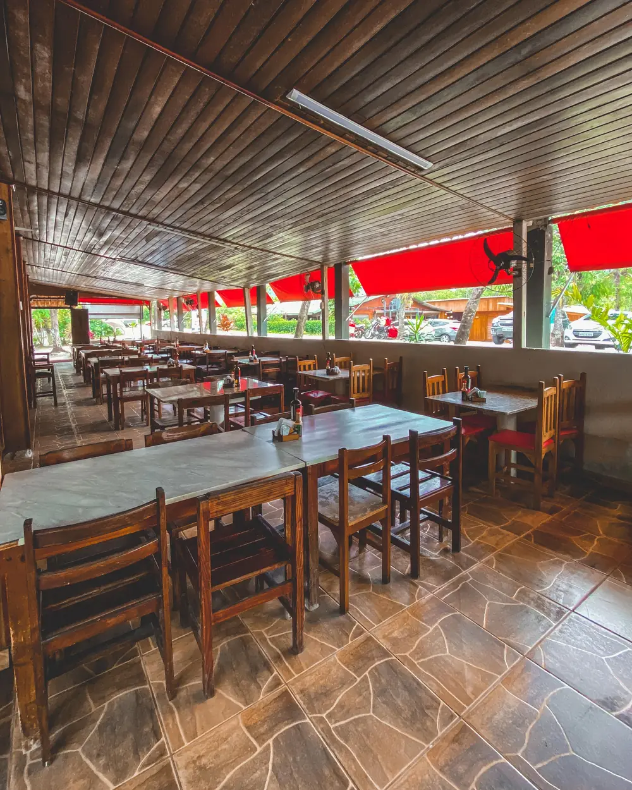
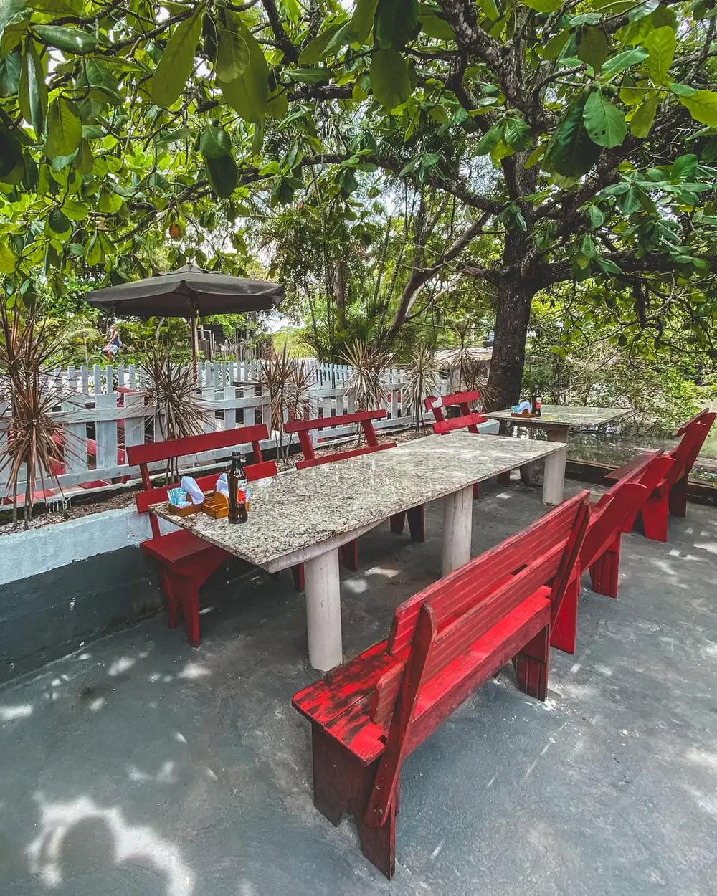
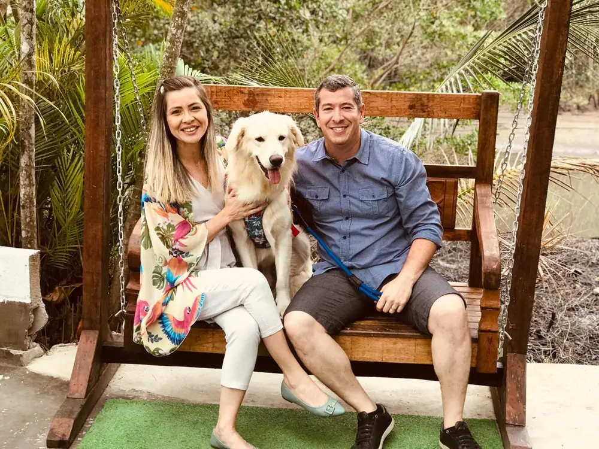

Aberto de


Cada prato é cuidadosamente preparado com ingredientes frescos, selecionados diariamente para garantir qualidade, sabor e autenticidade.
Nossa cozinha combina tradição e técnica contemporânea para transformar frutos do mar em verdadeiras experiências gastronômicas.



Veja o que nossos clientes dizem e acompanhe os pratos e momentos reais no nosso dia a dia.
Estr. Roberto Burle Marx, 5909 - Barra de Guaratiba, Rio de Janeiro - RJ, 23020-255